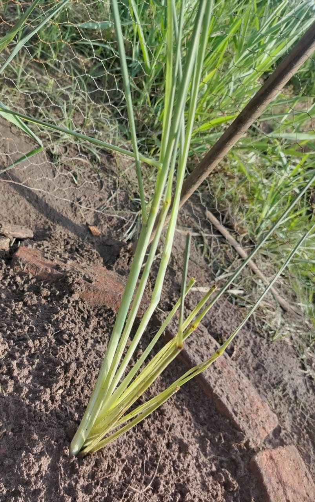

Hierba Limón o Citronela
Propiedades: Sus infusiones son muy efectivas para aliviar gases, hinchazón y cólicos. Además de su función digestiva, es una gran antiinflamatoria y analgésica.
Descubre las propiedades y usos tradicionales de las plantas medicinales.
Propiedades: Sus infusiones son muy efectivas para aliviar gases, hinchazón y cólicos. Además de su función digestiva, es una gran antiinflamatoria y analgésica.
Propiedades: Su infusión ayuda a calmar las náuseas, la indigestión y los espasmos del estómago.
Propiedades: Su corteza y sus hojas tienen propiedades digestivas, aliviando la indigestión y los gases. Además, es un potente antinflamatorio, especialmente la vitamina C de su fruto. También es un relajante natural que ayuda a calmar el estrés y la ansiedad.
Propiedades: Ayuda a reducir gases intestinales, cólicos y sensación de plenitud después de las comidas.
Propiedades: Su gel interior es extraordinario para curar quemaduras, suavizar la piel irritada, y como humectante natural.
Propiedades: Los beneficios clave de este ingrediente son su acción antioxidante que combate el envejecimiento, su capacidad antiinflamatoria que calma irritaciones y rojeces, y sus propiedades antimicrobianas que ayudan a prevenir infecciones leves y son útiles contra el acné. Además, actúa como astringente suave para controlar la grasa y los poros, y proporciona un efecto refrescante y tonificante a la piel.
Propiedades: Es un excelente cicatrizante que promueve la regeneración y se utiliza en remedios caseros para atenuar manchas, controlar el brillo y combatir el envejecimiento prematuro, siendo también tradicionalmente usado para aliviar quemaduras leves y eccemas.
Propiedades: Sus grasas monoinsaturadas refuerzan la barrera de la piel, asegurando una hidratación profunda, mientras que la luteína y zeaxantina proporcionan protección adicional contra el daño solar y el envejecimiento.
Propiedades: Se utiliza tradicionalmente para aliviar diversas molestias: se consume en infusiones para tratar la inflamación leve de las vías urinarias (sumado a su efecto diurético), se aplica en cataplasmas o se ingiere para calmar el dolor articular y muscular, y ayuda a mitigar la inflamación digestiva leve con su efecto calmante intestinal..